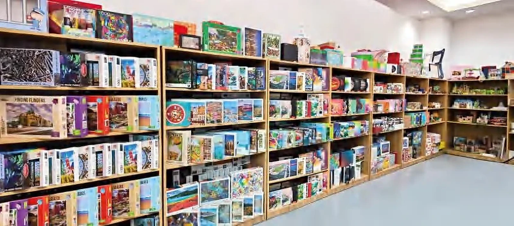

Qinyi Printing
Le business de production pour la fabrication de papeterie, conversion, assemblage et emballages.
Dongguan Qinyi Printing Co., Ltd.
Qinyi Printing développe et fabrique des puzzles, jeux de papier, cartes et emballages imprimés à Dongguan, Chine. L'opération approximativement de 5 000 m² a plus de 80 membres du personnel.

Caractéristiques de l'entreprise
De pré-édition et impression jusqu'à découpe à main levée et emballage, les étapes de production en chaîne soutiennent les produits sous une seule brief d'objectifs avec une approche artistique guidée.
Vérifier le périmètre de productionIdentité & Marque
Dongguan Qinyi Printing Co., Ltd. utilise Qinyi Printing comme son nom de société en anglais. Coinshin / 可燊礼品 est sa marque de produits créatifs, développée depuis 2020 pour des cadeaux de papier créatifs.
Le business de production pour la fabrication de papeterie, conversion, assemblage et emballages.
L'identité des produits cadeaux pour les puzzles, jeux et produits créatifs de papier depuis 2020.
Rue No. 10 Jianmin 1er Road, Shangyuan Village, Chashan Town, Dongguan, Guangdong, China.

Ce que nous fabriquons
La gamme des produits inclut les puzzles à jenga et 3D, les jeux de papier et de cartes créatifs, les produits d'éducation en papier, les boîtes de couleur et cadeaux, les sacs en papier, les étiquettes et les feuilles d'informations d'utilisation.
Explorez notre gamme de produitsModèle de travail
Chaque projet commence avec son public cible, sa utilisation prévue, la quantité souhaitée, le marché visé et l'horizon temporel. Les matériaux, la construction, le printage, la finition et le packaging sont ensuite revus selon une spécification unique.
Transférer les références d'art factices, les références et les objectifs du produit dans un format manufacturable.
Coordonner les pré-éditions, le printage, l'outil de fabrication, la découpe à l'emporte-pièce et la finition sur surface.
Portez les composants du produit, les instructions et le packaging dans la forme préétablie convenue.
Contacter la société
Qinyi Printing est situé sur la rue No. 10 Jiamin, Village Shangyuan, Town Chashan, Dongguan, Guangdong, Chine. Envoyez les détails du produit à hello@qinyiprinting.com.